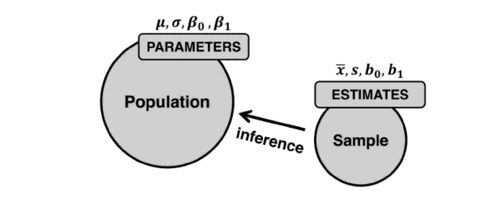
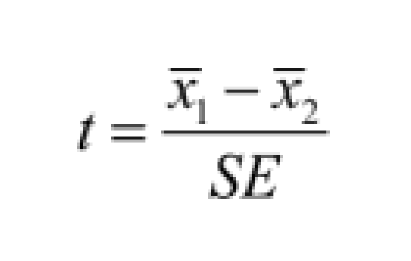
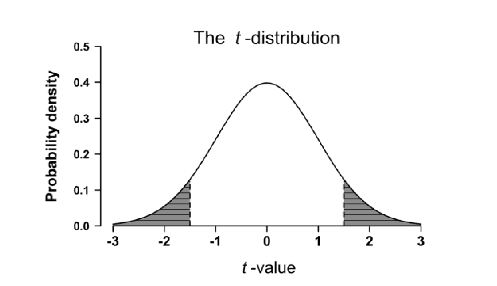

Inferential statistics
- We talked about descriptive statistics
- We talked about regression modelling
What is inferential statistics?
Inferential statistics

Inferential statistics
- Canonical definition
- expanded definition
Hypothesis testing
NHST: Null Hypothesis Significance Testing
- Grounded in frequentist statistics
- Long-run effects e.g. coin flip has p = 0.5
NHST
Whenever you are conducting original, scientific research, you usually have at least one:
- research question
- hypothesis
Research question
A research question is the focus of your study e.g.
- Does lexical frequency impact word reading response times?
Hypotheses
The predicted – based on previous findings – outcome of your study e.g.
- H1: changes in lexical frequency impact word reading times.
Null hypothesis
Every every hypothesis – can be matched to a corresponding null hypothesis. In the example from thee slides, the null hypothesis (or H0) would be:
- H0: changes in lexical frequency do not impact reading times.
Hypothesis testing
The goal of scientific studies is to determine whether the null hypothesis can be rejected. The null hypothesis acts as the default option until evidence is presented that suggests otherwise.
While modelling (i.e. descriptive statistics, regression) can help us determine the extent to which a distribution changes as a function of a predictor, there are tests that can be combined with regression to determine whether the effect of the predictor on our outcome variable can be deemed statistically significant
Hypothsis testing
test statistics such as t (t-test) can be used to determine the incompatibility of the data with the null hypothesis e.g. whether the null hypothesis can be rejected
Effect (size)
- The magnitude of a difference: All else being equal, the bigger the difference between two groups, the more you should expect there to be a difference in the population.
- The variability in the data: All else being equal, the less variability there is within the sample, the more cer tain you can be that you have estimated a difference accurately.
- The sample size: All else being equal, bigger samples allow you to measure differences more accurately.
Effect size
In order to address the first point, the magnitude of the effect, we introduce Cohen’s d
Cohen’s d is simply the difference of the two sample means divided by the overall standard deviation.
- Combines point 1 and 2
- In a way, Cohen’s d is comparable to signal-to-noise ratio
Standard error
To account for sample size (which is not accounted for in Cohen’s d) we can talk about standard error The standard error is s / sqrt(N)
You can use standard error to compute confidence intervals (or CI)
and now…
Did you know: Gannets have excellent binocular vision which allows them to spot fish while hovering over the water; once they have spotted their prey they will fold in their wings and dive from a height of up to 40m, reaching speeds of up to 100kmph.
t test
t-test formula:

using t for determining p

Downsides of Multiple Testing
- Multiple testing refers to the repeated testing of hypotheses.
- Often used in research settings where there are large datasets.
- It has its fair share of drawbacks that we must be aware of.
False Positives – Type I Error
- One major downside is the increase in false positives (Type I errors).
- The more tests we perform, the higher the chance of incorrectly rejecting a true null hypothesis.
- This phenomenon can lead to false discoveries and misinterpretation of data.
False Negatives – Type II Error
- Multiple testing can also lead to increased false negatives (Type II errors).
- In trying to avoid Type I errors, we might fail to reject false null hypotheses.
- This could lead to missed discoveries and underestimation of significant relationships.
One Example Solution: Bonferroni Correction
- A popular method to control the false positive rate is the Bonferroni correction.
- This adjusts the significance level (α) by dividing it by the number of tests.
- The correction, however, can be too strict and increase the risk of Type II errors.
Other Solutions
- Other solutions include False Discovery Rate (FDR) controlling procedures.
- Holm’s method is another alternative that’s less conservative than Bonferroni.
- Methods like the Benjamini-Hochberg procedure strike a balance between Type I and Type II errors.
Remember: Always consider the context and potential impact of errors when choosing a method!
Correctly Powered Studies
- A study is said to be correctly powered when it is designed with a sufficient sample size to detect an effect of a given size.
- The power of a test is the probability that it correctly rejects the null hypothesis when the alternative hypothesis is true.
- A well-powered study reduces the risk of Type II errors, leading to reliable and reproducible results.
- Power analysis can be conducted beforehand to determine the required sample size.
Underpowered Studies
- An underpowered study has a low probability of detecting an effect, if it exists.
- This increases the risk of a Type II error - failing to reject a false null hypothesis.
- Underpowered studies can lead to wasted resources, unethical research (particularly in medical and psychological fields), and contribute to the “replication crisis”.
- Also, they can potentially result in misleading findings if they are part of multiple testing investigations without proper correction methods.